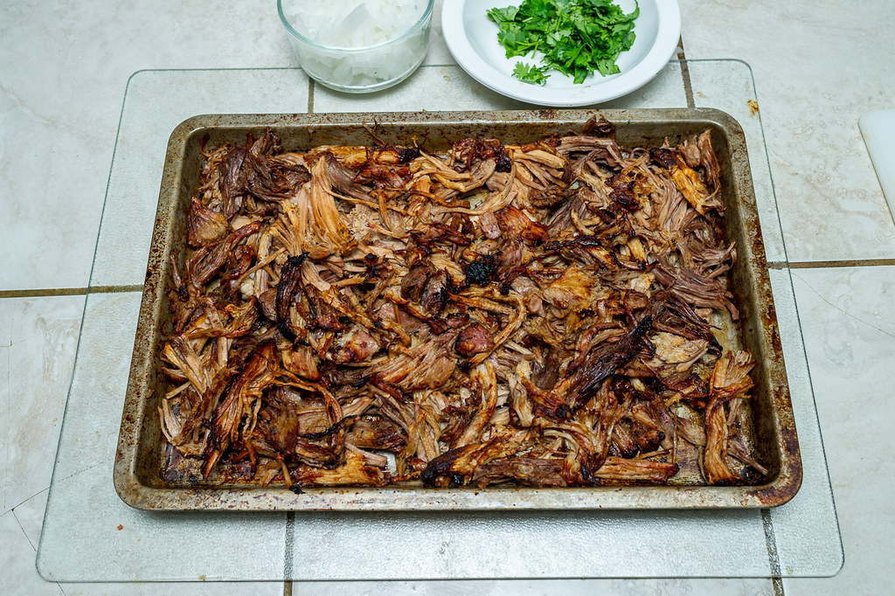

Home
Carnitas

Description
This recipe is sure to get the fam excited for taco night!
Ingredients
- 3 lb Pork Shoulder
- 1 1/2 cups Orange Juice
- 2 tsp Ancho Chili Powder
- 1 Onion
- 3 Jalapenoes
- 6 Cloves of Garlic
- 2 tsp Black Pepper
- 1 tsp Ground Cumin
Steps
- Mix Orange Juice and Seasoning in Instant Pot
- Place Pork Shoulder in Instant Pot
- Seal Instant Pot lid and cook on High Pressure for 35 Minutes
- Follow Instant Pot instructions for quick release. Once lid is unlocked, remove pork using a slotted spoon
- Shred meat with two forks, transfer to a sheet tray and pour 3/4 cup cooking liquid over meat and toss to combine
- Set Oven to Broil, plase tray in oven and broil until crisp and browned